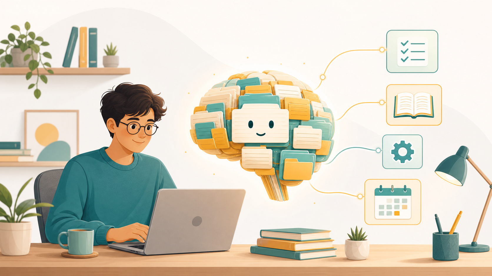
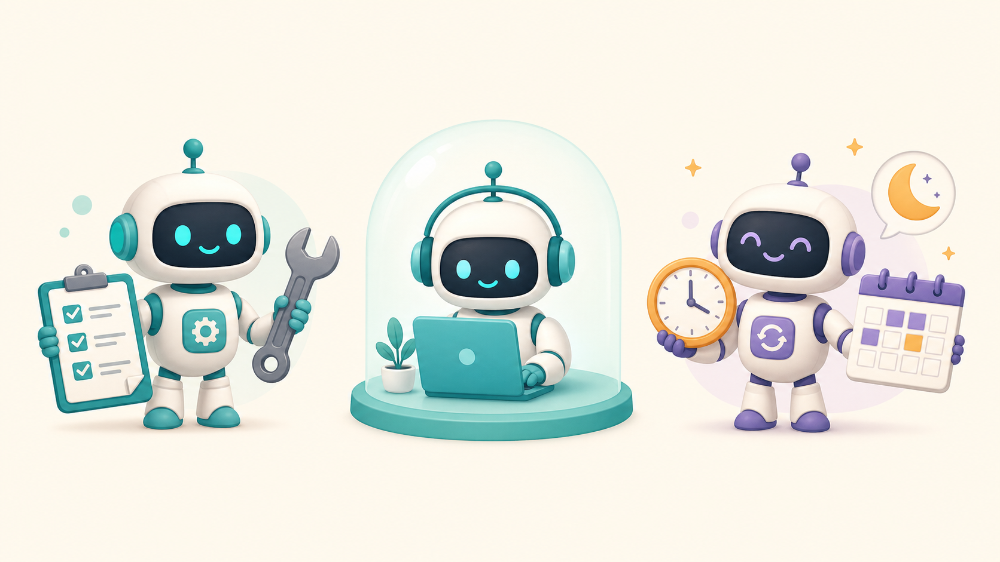

This is a class about AIOS — an AI Operating System. A way to turn a chatbot that forgets everything into a partner that knows who you are, remembers what it learns, and grows new skills over time.
Esta es una clase sobre AIOS — un Sistema Operativo de IA. Una forma de convertir un chatbot que olvida todo en un compañero que sabe quién eres, recuerda lo que aprende, y desarrolla nuevas habilidades con el tiempo.

Every new conversation, your AI starts from zero. You re-explain who you are, what you're working on, how you like things. It can't remember yesterday's decision or last week's lesson. Brilliant for ten minutes, amnesiac forever.
Cada conversación nueva, tu IA empieza desde cero. Le vuelves a explicar quién eres, en qué trabajas, cómo te gustan las cosas. No recuerda la decisión de ayer ni la lección de la semana pasada. Brillante por diez minutos, amnésico para siempre.
An AIOS is a version-controlled folder you own. Your AI lives inside it. The folder gives the AI four things a blank chat never has:
Un AIOS es una carpeta con control de versiones que es tuya. Tu IA vive dentro de ella. La carpeta le da a la IA cuatro cosas que un chat en blanco nunca tiene:
It knows who you are, what you're working on, and how you like to sound. Lives in context/.Sabe quién eres, en qué trabajas y cómo te gusta sonar. Vive en context/.
Facts it has learned, written down and reused — not lost in chat history. Lives in references/.Hechos que ha aprendido, escritos y reutilizados — no perdidos en el historial. Vive en references/.
Repeatable workflows you trigger with /commands. Live in .claude/skills/.Flujos de trabajo repetibles que activas con /comandos. Viven en .claude/skills/.
Builders that let it create new skills, agents, and automations as your needs change.Constructores que le permiten crear nuevas skills, agentes y automatizaciones según cambian tus necesidades.
You don't program it. You talk to it — and it writes itself into a system.No lo programas. Hablas con él — y se escribe a sí mismo como un sistema.
Every AIOS is just organized folders and markdown files. Nothing magic — that's the point. You can read all of it.
Cada AIOS son solo carpetas organizadas y archivos markdown. Nada mágico — ese es el punto. Puedes leerlo todo.
CLAUDE.md is re-read by the AI every single turn. It's the AIOS's constitution — short on purpose (a 200-line budget), pointing to detail that lives elsewhere.
CLAUDE.md es releído por la IA en cada turno. Es la constitución del AIOS — corto a propósito (un presupuesto de 200 líneas), apuntando al detalle que vive en otros archivos.
The most important part. Your wiki has three layers, an idea from Andrej Karpathy. Raw sources flow in, the AI writes interpreted pages, and a protocol keeps it disciplined.
La parte más importante. Tu wiki tiene tres capas, una idea de Andrej Karpathy. Las fuentes entran, la IA escribe páginas interpretadas, y un protocolo la mantiene disciplinada.
A few notes today become a connected canopy of knowledge over time.Unas cuantas notas de hoy se vuelven una copa de conocimiento conectado con el tiempo.
A source lands in knowledge/. The AI reads it, talks it over with you, writes a wiki page, updates the index.Una fuente llega a knowledge/. La IA la lee, la platica contigo, escribe una página y actualiza el índice.
You ask something. It reads the wiki, answers with citations, and files good answers back as new pages.Preguntas algo. Lee la wiki, responde con citas, y guarda las buenas respuestas como nuevas páginas.
During /audit, it checks for contradictions, stale claims, broken links, and orphans.Durante /audit, busca contradicciones, datos viejos, enlaces rotos y páginas huérfanas.
Three ways your AIOS does work. The first question whenever you want to automate something: which of the three is this?
Tres formas en que tu AIOS hace el trabajo. La primera pregunta cuando quieras automatizar algo: ¿cuál de las tres es esta?

| Who starts itQuién lo inicia | Where it runsDónde corre | Reach for it when…Úsalo cuando… | |
|---|---|---|---|
| ⚡ SkillSkill | YouTú | In the chatEn el chat | A workflow you run together, interactively.Un flujo que corren juntos, de forma interactiva. |
| 🤖 AgentAgente | You (delegated)Tú (delegado) | Its own clean contextSu propio contexto limpio | It needs isolation or restricted tools.Necesita aislamiento o herramientas limitadas. |
| ⏰ RoutineRutina | Itself (schedule)Ella misma (horario) | UnattendedSin supervisión | It should run on its own, on a schedule.Debe correr sola, en un horario. |
⚠️ Common trap: "I keep doing X by hand" is usually a skill (a saved recipe), not an agent.⚠️ Trampa común: "sigo haciendo X a mano" casi siempre es una skill (una receta guardada), no un agente.
An AIOS isn't finished when you install it — that's day one. It grows because you run a small loop and build when you hit a repeating need.
Un AIOS no está terminado cuando lo instalas — ese es el día uno. Crece porque corres un pequeño ciclo y construyes cuando topas con una necesidad repetida.
Day 1. ~7 questions, then it fills your context.Día 1. ~7 preguntas, luego llena tu contexto.
Weekly health check. Scores the Four Cs and names your top gaps.Chequeo semanal. Califica las Cuatro C y nombra tus brechas principales.
Weekly. Find one thing to automate, scope it, ship it. Runs on the 3Ms.Semanal. Encuentra algo que automatizar, defínelo, constrúyelo. Usa las 3M.
Context
Connections
Capabilities
Cadence
25 points each. Is your AIOS well-rounded?25 puntos cada una. ¿Está tu AIOS equilibrado?
Mindset
Method
Machine
How to think → decide → build. A framework by Nate Herk.Cómo pensar → decidir → construir. Un marco de Nate Herk.
When the loop surfaces a repeating need, you reach for a builder — /skill-builder, /agent-builder, /routines-builder, or /agents-team-builder — and the AIOS grows a new part of itself.Cuando el ciclo revela una necesidad repetida, usas un constructor — /skill-builder, /agent-builder, /routines-builder, o /agents-team-builder — y el AIOS hace crecer una nueva parte de sí mismo.
git clone …/aios-starter-kit my-aiosclaude.en la carpeta — escribe claude.knowledge/ and ask Sage to summarize it. Then run /audit and watch it score the very AIOS you just built.
Suelta una transcripción de junta en knowledge/ y pídele a Sage que la resuma. Luego corre /audit y mira cómo califica el AIOS que acabas de construir.